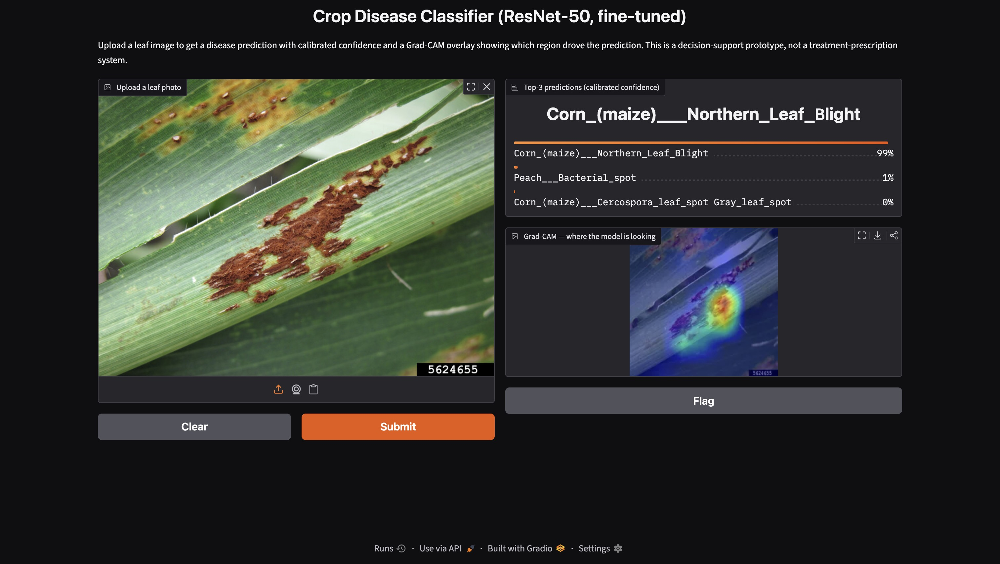
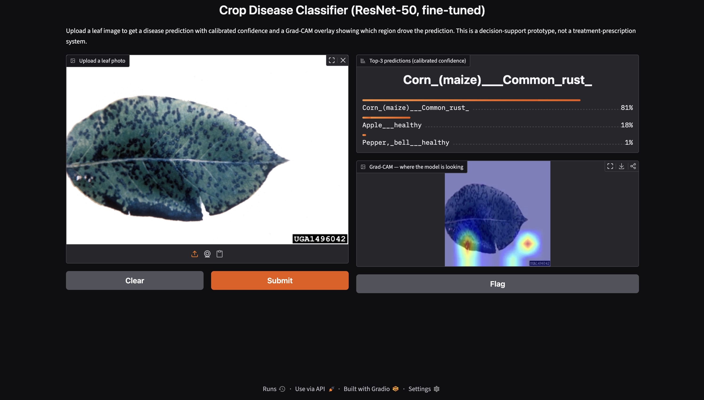
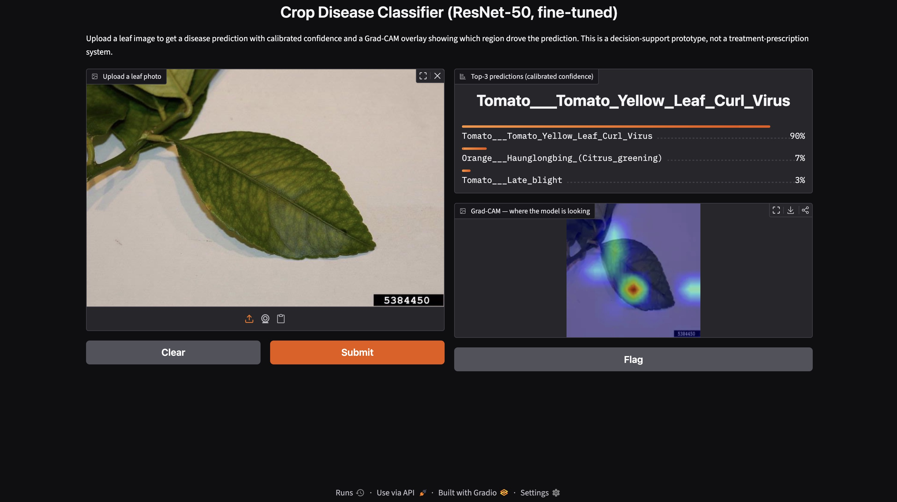
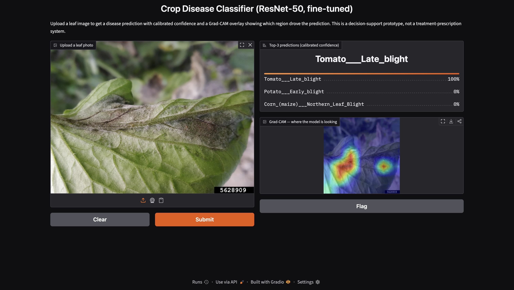
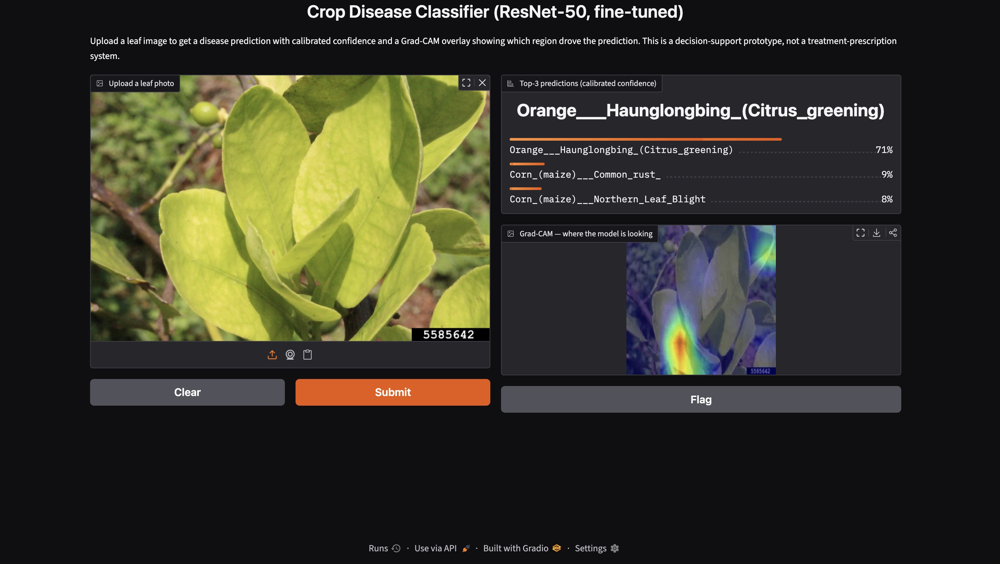
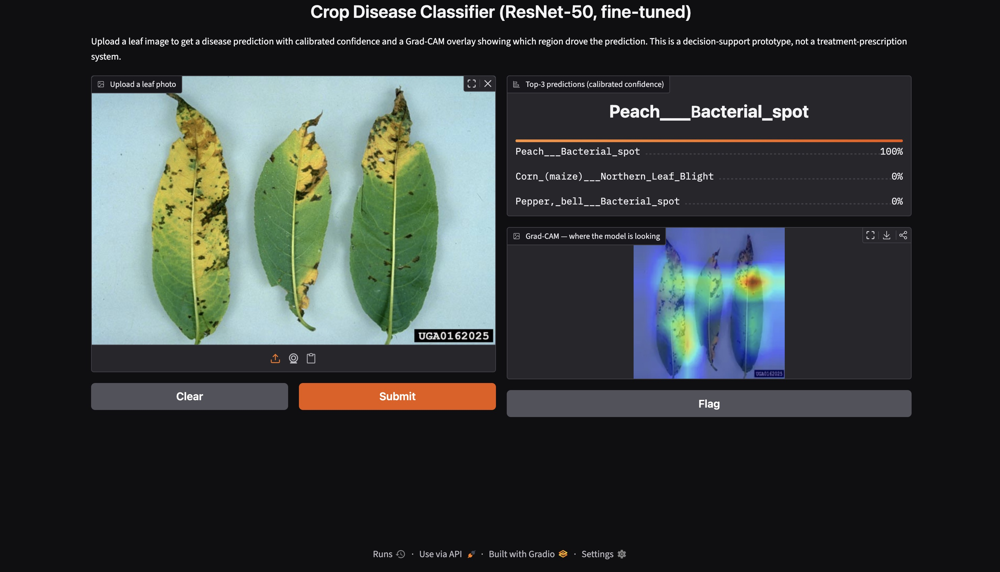

| Project | Crop Disease Classification Using Transfer Learning — Group 5 |
| Prepared by | Deepthi Prakash, Shahina Pathan, Venkata S. Sarma, Dushyant Kumar |
| Version | 1.1 |
| Status | Prototype |
This tool is a decision-support aid, not an automated diagnostic system. It takes a photograph of a crop leaf and suggests possible diseases, along with a confidence score and a visual explanation of what the tool "looked at" to make its suggestion. It is designed to help extension workers triage and prioritize cases quickly — not to replace expert diagnosis or guide treatment decisions on its own.
This runs as a simple local demo (built with Gradio); no internet connection or account is required to use it.
Motivation. As anticipated in the project proposal (Challenges #3 and #7), PlantVillage images are captured under controlled, uniform-background studio conditions. To assess whether the model's near-ceiling test performance (macro-F1 = 0.991) would transfer to real-world usage, the final fine-tuned ResNet-50 was evaluated on a set of independent field images sourced from the University of Georgia's IPM Images / Bugwood.org archive — an agricultural extension image repository entirely separate from PlantVillage.
Method. Six images were selected, each verified against the archive's own disease-label metadata before use, spanning five distinct diseases already present in the model's 38 trained classes. Each image was passed through the identical preprocessing pipeline used for evaluation (resize, ImageNet normalization) and the identical temperature-scaled confidence from the calibration analysis (T = 0.615). All results below were captured live from the running Gradio prototype — not simulated.
| # | Verified true label | Model's #1 prediction | Confidence | Result |
|---|---|---|---|---|
| 1 | Corn common rust | Corn Northern Leaf Blight | 99% | ✗ Wrong |
| 2 | Apple scab | Corn common rust | 81% | ✗ Wrong |
| 3 | Citrus greening (HLB) — example A | Tomato yellow leaf curl virus | 90% | ✗ Wrong |
| 4 | Tomato late blight | Tomato late blight | 100% | ✓ Correct |
| 5 | Citrus greening (HLB) — example B | Citrus greening (HLB) | 71% | ✓ Correct |
| 6 | Peach bacterial spot | Peach bacterial spot | 100% | ✓ Correct |
Overall: 3 of 6 field images correctly classified (50%), against 99.4% accuracy / 0.991 macro-F1 on the PlantVillage held-out test set. Notably, the two citrus greening examples (rows 3 and 5) show that outcome can swing either way even for the same disease, depending on the individual photo — reinforcing that this is a genuine distribution-shift issue rather than a single bad example.
The figures below are actual screenshots captured from the running Gradio prototype, confirming the results in the table above.






Interpretation. This 50% field accuracy (vs. 99.4% on the PlantVillage test set) is consistent with the background-bias risk identified in the proposal: PlantVillage's uniform studio backgrounds (plain black, white, or gray backdrops) may have allowed the model to partially key on background texture rather than relying solely on disease-lesion features — visible directly in Figure 2, where the misclassified apple scab photo itself uses a studio-style backdrop closely resembling PlantVillage's own style, yet was still misclassified. Field photographs with natural backgrounds, soil, and foliage fall outside this learned distribution more broadly. Critically, the confidence-calibration mechanism does not reliably degrade under this distribution shift in every case; three of the six predictions above remained confidently wrong (81–99%) rather than appropriately uncertain, though notably the correct citrus greening prediction (Figure 5, 71%) does show the model can express lower confidence appropriately on harder cases.
.pth)new_saved_models/resnet50_unfrozen_best_state_100p.pth (90.3 MB, verified on disk)app.py) — a single-process local application accessed via browser, not a REST API[User] -> uploads leaf photo via Gradio browser UI
|
[PIL.Image] -> convert to RGB -> torchvision.transforms (resize 224x224, ToTensor, ImageNet normalize)
|
[ResNet-50 model] -> load_state_dict(.pth) -> model.eval() -> forward pass (torch.no_grad())
|
[Post-processing] -> softmax(logits / T) with calibrated temperature T=0.615 -> top-3 classes
|
[Grad-CAM] -> hook on layer4[-1] -> backward pass on predicted class -> heatmap overlay
|
[Gradio UI] -> displays top-3 predictions + confidence + Grad-CAM image
Python version: 3.12.12 (verified) | CPU-only PyTorch is sufficient — verified to load and run inference correctly with no GPU present.
torch==2.13.0 torchvision==0.28.0 pillow==12.3.0 matplotlib # required for Grad-CAM colormap rendering gradio numpy
ModuleNotFoundError: No module named 'matplotlib' — matplotlib is required for the Grad-CAM heatmap
colormap and must be included in the dependency list above; it is easy to omit since the main prediction path does
not need it.
| Test | Input | Result | Details |
|---|---|---|---|
| 1 — Valid image | Apple___healthy sample |
✅ SUCCESS | Predicted: Apple___healthy, confidence 1.0000, inference time 0.0313s, model load time 0.387s |
| 2 — Invalid input | Non-image .txt file |
⚠️ ERROR (expected, caught) | PIL.UnidentifiedImageError: cannot identify image file |
| 3 — Corrupted image | Truncated/garbage .jpg bytes |
⚠️ ERROR (expected, caught) | OSError: Truncated File Read |
Implication: the demo must wrap image loading in a try/except and show the user a clear "please upload a valid image" message for both invalid and corrupted uploads, since PIL raises these errors rather than failing silently or crashing the whole app.
torch.no_grad() is used during the main inference pass to avoid building a
gradient graph; Grad-CAM separately requires gradients only for its own scoped backward hook.TEMPERATURE constant must be
updated together, or confidence scores will be miscalibrated.| Metric | Value |
|---|---|
| Model | ResNet-50 (ImageNet-pretrained, fine-tuned) |
| Held-out test accuracy | 99.4% |
| Held-out test macro-F1 | 0.991 |
| Calibration (ECE) | 0.049 → 0.004 after temperature scaling (T = 0.615) |
| Field-photo accuracy (verified sample, n=6) | 50% (3/6 correct), three high-confidence errors |
| Minimum training data for target macro-F1 (≥0.88) | Achieved with as little as 15% of available training data |
| Total model parameters | 23,585,894 |
| Checkpoint file size | 90.3 MB |